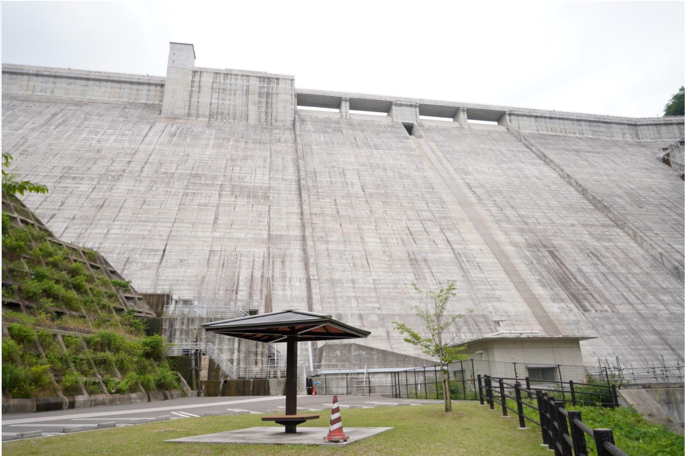

実景放流AR
写真中央より少し右の開口部に注目して、放流の強さを変えてみましょう。

写真で体験現地では安全な見学場所に立ち止まり、カメラを写真と同じ向きに合わせてください。
教育用の仮想放流です。強さは演出用の相対値です。実際の設備操作・水位予測・避難判断には使用できません。豪雨・警報時は屋外での体験を中止してください。
写真中央より少し右の開口部に注目して、放流の強さを変えてみましょう。

写真で体験現地では安全な見学場所に立ち止まり、カメラを写真と同じ向きに合わせてください。
教育用の仮想放流です。強さは演出用の相対値です。実際の設備操作・水位予測・避難判断には使用できません。豪雨・警報時は屋外での体験を中止してください。